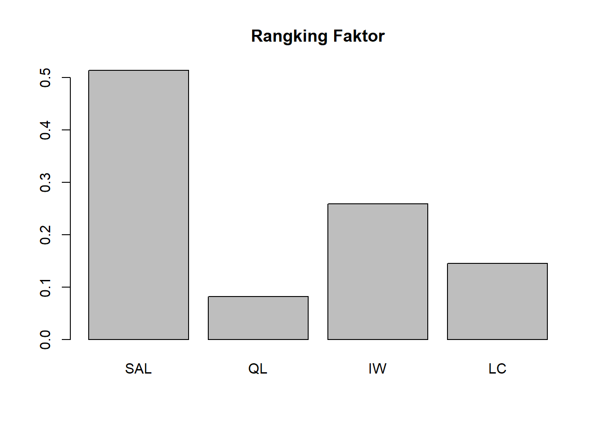
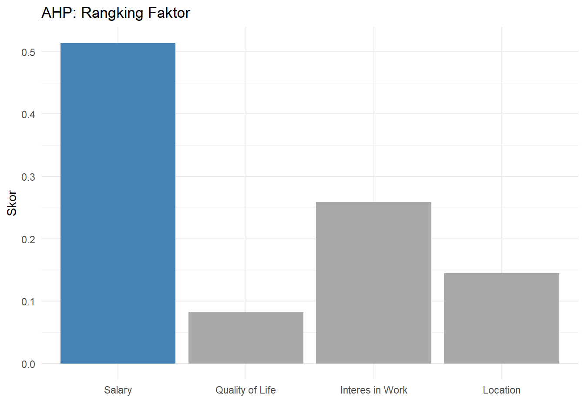
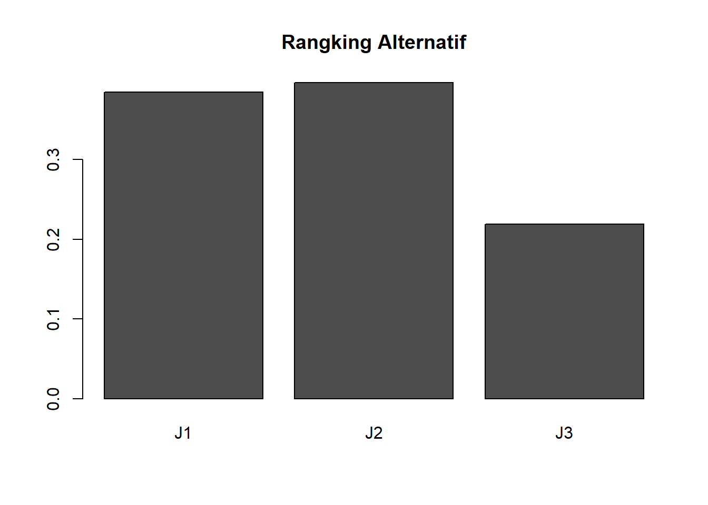
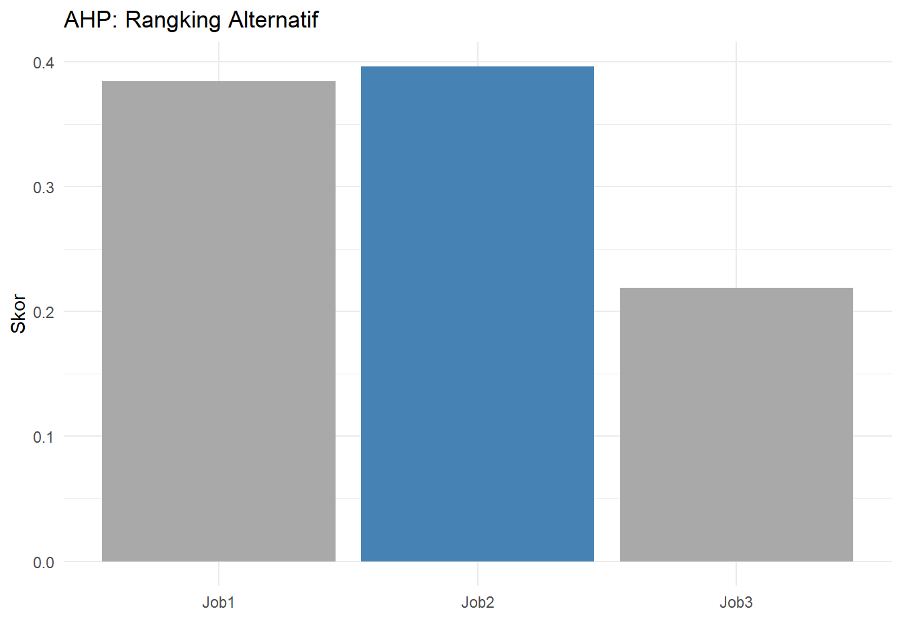

Chapter 8 Analytic Hierarchy Process (AHP)
8.1 Prosedur Pengolahan AHP
8.1.1 Data
ahpdata <- read.csv("Data/ahp.csv")
ahpdata
#> Responden SAL_QL SAL_IW SAL_LC QL_IW QL_LC IW_LC J1_J2
#> 1 1 -5 -2 -4 2 2 -2 -2
#> 2 2 -7 -3 -3 3 3 -4 -3
#> J1_j3 J2_J3 J1_J2.1 J1_j3.1 J2_J3.1 J1_J2.2 J1_j3.2
#> 1 -4 -2 2 3 3 7 3
#> 2 -7 -1 3 3 3 4 -1
#> J2_J3.2 J1_J2.3 J1_j3.3 J2_J3.3
#> 1 -3 4 7 -2
#> 2 -3 5 2 -48.1.2 Analisis
8.1.2.1 Faktor
# Mendefinisikan faktor
faktor <- c("SAL", "QL", "IW", "LC")
# Menampilkan data frame
faktor_data <- ahpdata[, 2:7]
faktor_data
#> SAL_QL SAL_IW SAL_LC QL_IW QL_LC IW_LC
#> 1 -5 -2 -4 2 2 -2
#> 2 -7 -3 -3 3 3 -4# install.packages("ahpsurvey")
library(ahpsurvey)
faktor_data_mat <- ahp.mat(df = faktor_data, faktor,
negconvert = TRUE)
faktor_data_mat
#> [[1]]
#> SAL QL IW LC
#> SAL 1.00 5 2.0 4.0
#> QL 0.20 1 0.5 0.5
#> IW 0.50 2 1.0 2.0
#> LC 0.25 2 0.5 1.0
#>
#> [[2]]
#> SAL QL IW LC
#> SAL 1.0000000 7 3.0000000 3.0000000
#> QL 0.1428571 1 0.3333333 0.3333333
#> IW 0.3333333 3 1.0000000 4.0000000
#> LC 0.3333333 3 0.2500000 1.0000000# Consistency
ri <- ahp.ri(nsims = 10000, dim = 4, seed = 42)
ahp.cr(faktor_data_mat, faktor, ri)
#> [1] 0.01780548 0.09677931#Treatement Consistency (Jika Tidak Konsisten)
#faktor_data_mat <- ahp.harker(faktor_data_mat, faktor, iterations = 10, stopcr = 0.1)
#ahp.cr(faktor_data_mat, faktor)The ahp.cr function calculates the consistency ratio of each decision-maker, defined by the following equation:
CR = (λ − n)/((n − 1)(RI))
Where λ is the maximum eigenvalue of the pairwise comparison matrix, n is the number of attributes, and RI is the random index. Following Saaty and Tran (2007), the RI is a function of n and is the consistency ratio of randomly generated pairwise comparison matrices.
Saaty showed that when the CR is higher than 0.1, the choice is deemed to be inconsistent
8.1.2.2 Individual Rangking Faktor
library(tidyverse)
#> Warning: package 'ggplot2' was built under R version 4.4.3
#> ── Attaching core tidyverse packages ──── tidyverse 2.0.0 ──
#> ✔ dplyr 1.1.4 ✔ readr 2.1.5
#> ✔ forcats 1.0.0 ✔ stringr 1.5.1
#> ✔ ggplot2 3.5.2 ✔ tibble 3.2.1
#> ✔ lubridate 1.9.4 ✔ tidyr 1.3.1
#> ✔ purrr 1.0.2
#> ── Conflicts ────────────────────── tidyverse_conflicts() ──
#> ✖ dplyr::filter() masks stats::filter()
#> ✖ dplyr::lag() masks stats::lag()
#> ℹ Use the conflicted package (<http://conflicted.r-lib.org/>) to force all conflicts to become errors
library(tibble)
faktor_ind <- ahp.indpref(faktor_data_mat,
faktor,
method = "arithmetic")
round(faktor_ind, 3) %>% rownames_to_column('ID')
#> ID SAL QL IW LC
#> 1 1 0.512 0.099 0.243 0.147
#> 2 2 0.517 0.066 0.274 0.1438.1.2.3 Aggregate Rangking Faktor
faktor_agg <- ahp.aggpref(faktor_data_mat,
faktor,
method = "arithmetic",
aggmethod = "arithmetic")
round(faktor_agg, 3) %>% t()
#> SAL QL IW LC
#> [1,] 0.514 0.082 0.259 0.145
library(ggplot2)
# Mengubah Cat menjadi factor dengan label yang diinginkan
data = data.frame("Cat"=row.names(data.frame(faktor_agg)),
data.frame(faktor_agg))
data$Cat <- factor(data$Cat,
levels = c("SAL", "QL", "IW", "LC"),
labels = c("Salary", "Quality of Life",
"Interes in Work", "Location"))
# Mengurutkan
data$warna <- ifelse(data$faktor_agg ==
max(data$faktor_agg),
"terbesar", "lainnya")
# Buat grafik batang
ggplot(data, aes(x = Cat,
y = faktor_agg,
fill = warna)) +
geom_bar(stat = "identity") +
scale_fill_manual(values = c("terbesar" = "#4682B4",
"lainnya" = "#A9A9A9")) +
theme_minimal() +
theme(legend.position = "none") + # Sembunyikan legenda
labs(
title = "AHP: Rangking Faktor",
y = "Skor",
x = "")
8.1.2.5 Alternatif untuk Faktor Salary
library(dplyr)
alternatif <- c("J1", "J2", "J3")
# Menampilkan data frame
alternatif_data1 <- ahpdata[,8:10]
alternatif1 <- ahp.mat(df = alternatif_data1,
atts = alternatif,
negconvert = TRUE)
alternatif1_agg <- ahp.aggpref(alternatif1,
alternatif,
method = "arithmetic",
aggmethod = "arithmetic")
round(alternatif1_agg, 3) %>% t()
#> J1 J2 J3
#> [1,] 0.628 0.232 0.1398.1.2.6 Alternatif untuk Faktor Quality of Life
8.1.2.7 Alternatif untuk Faktor Interest in Work
8.1.2.8 Alternatif untuk Faktor Location
8.1.2.9 Gabungan Alternatif
alternatif_agg <- cbind(alternatif1_agg,alternatif2_agg,
alternatif3_agg,alternatif4_agg) %*% faktor_agg
alternatif_agg
#> [,1]
#> J1 0.3844544
#> J2 0.3964920
#> J3 0.2190537
data = data.frame("Cat"=row.names(data.frame(alternatif_agg)),
data.frame(alternatif_agg))
data$Cat <- factor(data$Cat,
levels = c( "J1" , "J2" ,"J3"),
labels = c("Job1", "Job2","Job3"))
# Buat grafik batang
data$warna <- ifelse(data$alternatif_agg == max(data$alternatif_agg),
"terbesar", "lainnya")
# Buat grafik batang
ggplot(data, aes(x = Cat, y = alternatif_agg, fill = warna)) +
geom_bar(stat = "identity") +
scale_fill_manual(values = c("terbesar" = "#4682B4",
"lainnya" = "#A9A9A9")) +
theme_minimal() +
theme(legend.position = "none") +
labs(
title = "AHP: Rangking Alternatif",
y = "Skor",
x = "")